Colas (Queues)
Contents
Colas (Queues)#
Objetivos
Objetivo 1…
Objetivo 2…
1. Introduccion#
Una cola (queue en inglés) es una lista ordenada en la cual las operaciones de inserción se efectúan en un extremo llamado ultimo (last, rear o tail) y las operaciones de borrado se efectúan en el otro extremo llamado primero (first, front o head). Es una estructura FIFO (First Input First Output).

Fig. 109 Representación de una cola en la vida real#
Una metáfora de esta terminología es una fila de las que se hace en los bancos cuando se esta haciendo en alguna diligencia. Tal y como sucede en la vida real; para el caso, una fila tiene dos extremos (tal y como se muestra en la figura anterior). En una cola. Cuando se esta haciendo una fila en un banco, y el cajero esta libre, este llama a la primera persona que se encuentra en la fila para ser atendida, una vez esta persona sale de la fila (es desencolada de la fila), la persona que seguia (segunda previamente) es colocada de primera a la espera de ser llamada. Por otro lado, cada vez que llega una persona a la fila, esta se ubica al final (se encola en la fila) haciendo que la fila crezca. La siguiente figura muestra un ejemplo de casos como estos:

Fig. 110 Casos de aplicación de una cola#
2. Sobre las colas (queues)#
Cuando hablamos de colas tenemos que tener en cuenta que se hace alución a un espacio de datos (buffer) donde se colocan datos de determinada manera tal y como se muestra en la siguiente representación:

Fig. 111 Representación de una cola#
De la figura anterior podemos observar se usan tres variables para definir las caracteristicas de la cola:
buffer: espacio de memoria donde se ponen los datos.tail: Variable que apunta al ultimo dato del buffer.head: Variable que apunta al primer dato del buffer.
Por otro lado, para meter o sacar datos al buffer, se definen dos operaciones las cuales son:
Enqueue(Encolar): agrega un nuevo elemento al final de la cola.Dequeue(Desencolar): elimina el primero de la cola y lo devuelve.
A continuación vamos a describir la implementación de la cola en C.
2. Implementación de una cola#
2.1. Implementación a partir array#
2.1.1. Definición de la cola#
La siguiente estructura se define una cola (stack) de tamaño fijo (CAPACITY = 4) cuyos miembros son:
count: Catidad de elementos agregados a la pila.head: Indice asociado al primer elemento de la pila.tail: Indice asociado al ultimo elemento de la pila.list: Buffer donde se almacenan los datos agregados a la pila.
La implementación en C se muestra a continuación:
#define CAPACITY 4
typedef struct _queue {
int count;
int head;
int tail;
int list[CAPACITY];
} queue;
La siguiente figura muestra la estructura asociada a la cola (queue) previamente definida:
Fig. 112 Implementación de una cola usando un array#
Simulación
En el siguiente link se muestra una simulación de una cola mediante un array.
2.1.2. Funciones de la cola#
Las operaciones basicas asociadas sobre la cola (queue) se resumen en la siguiente tabla:
Operación |
Descripción |
|---|---|
|
|
|
|
|
|
|
|
|
|
|
|
|
|
|
|
|
A continuación, se describe la implementación en C de cada una de las funciones previamente descritas:
Queue_init:void Queue_init(queue *q) { q->head = 0; q->tail = CAPACITY - 1; q->count = 0; }
La siguiente figura…
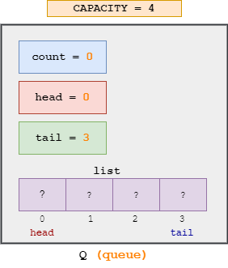 Fig. 113 Inicialización de la cola#
Queue_isEmpty:int Queue_isEmpty(queue *q) { return (q->count == 0); }
Queue_isFull:int Queue_isFull(queue *q) { return (q->count == CAPACITY); }
Queue_isEmpty:int Queue_isEmpty(queue *q) { return CAPACITY; }
Queue_head:int Queue_head(queue *q) { assert(!Queue_isEmpty(q)); return q->list[q->head]; }
Queue_back:int Queue_back(queue *q) { assert(!Queue_isEmpty(q)); return q->list[q->tail]; }
Queue_enqueue:void Queue_enqueue(queue *q, int data) { if(!Queue_isFull(q)) { q->tail = (q->tail + 1) % CAPACITY; q->count++; q->list[q->tail] = data; } else { printf("ERROR: Full queue\n"); } }
Suponiendo que se parte de una cola
qvacia, al insertar un elemento…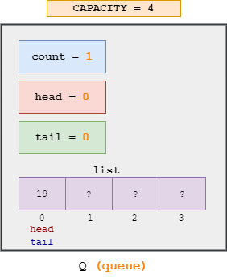 Fig. 114 Inserción del
19en la cola#Al insertar otro…
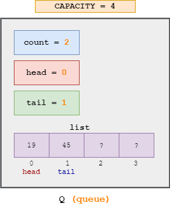 Fig. 115 Inserción del
45en la cola#Si se insertaran dos elementos mas,…
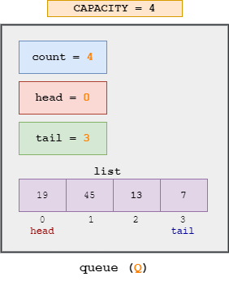 Fig. 116 Inserción de los numeros
13y7en la cola#Queue_dequeue:int Queue_dequeue(queue *q, int *data) { if (!Queue_isEmpty(q)) { q->count--; *data = q->list[q->head]; q->head = (q->head + 1) % CAPACITY; return 0; } else { printf("ERROR: Empty queue\n"); return -1; } }
Suponiendo que la cola tiene los elementos…
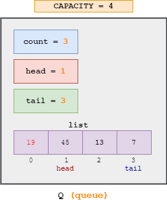 Fig. 117 Sacando el primer elemento (
19) de la cola#Queue_clear:void Queue_clear(queue *q) { q->head = 0; q->tail = CAPACITY - 1; q->count = 0; }
Queue_print:void Queue_print(queue *q) { if(Queue_isEmpty(q)) { printf("Empty queue.\n"); } else { // head - tail if(q->head < q->tail) { printf("<-- "); for(int i = q->head; i <= q->tail; i++){ printf("%4d ", q->list[i]); } printf("<-- \n"); } else { int i; printf("<-- "); for(i = q->head; i < CAPACITY; i++){ printf("%4d ", q->list[i]); } for(i = 0; i <= q->tail; i++) { printf("%4d ", q->list[i]); } printf("<-- \n"); } } }
2.1.3. Ejemplos#
2.2. Implementación como lista enlazada#
Simulación
En el siguiente link se muestra una simulación de una cola mediante una lista enlazada.
2.2.1 Estructuras asociadas la cola#
2.2.1.1. Nodo (node)#
Un nodo (node) es la estructura fundamental que compone a una lista. La siguiente figura muestra la representación de un nodo:
Fig. 118 Estructura de un nodo (node)#
A continuación, se muestra la definición de esta estructura de datos en C:
struct _node {
int data;
struct _node* next;
};
typedef struct _node node;
Los miembros (de la estructura node) data y next hacen referencia a los datos y el proximo nodo (node)
2.2.1.2. Cola#
La siguiente figura muestra la implementación de una estructura de datos tipo cola (queue)
Fig. 119 Representación de una cola (queue) mediante listas enlazadas.#
La definición en lenguaje C de la estructura queue se muestra a continuación:
typedef struct _queue {
node *head;
node *tail;
} queue;
Luego, usando esta estructura de datos, podemos definir las funciones necesarias para su manipulación.
2.2.2 Funciones#
Las operaciones basicas asociadas sobre una lista enlazada se muestran a continuacion:
Operación |
Descripción |
|---|---|
|
|
|
|
|
|
|
|
|
|
|
|
|
|
|
|
|
|
|
Implementar |
|
|
|
|
|
A continuación se muestra la implementación en C de cada una de las funciones anteriormente descritas.
Queue_init: .void Queue_init(queue *q){ q->head = NULL; q->tail = NULL; }
La siguiente figura…
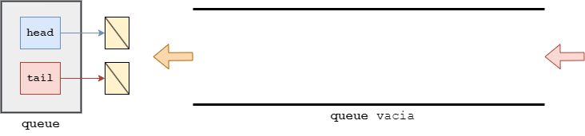 Fig. 120 Inicializacón de la cola (
queue)#Queue_isEmpty: Inicializa el nodoheadde una lista.int Queue_isEmpty(queue *q) { if ((q->head == q->tail) & (q->head == NULL)) { return 1; } else { return 0; } }
Queue_size:int Queue_size(queue *q) { int tam = 0; if (q->head == NULL) { return 0; } else { node *current = q->head; while (current) { tam++; current = current->next; } return tam; } }
Queue_front: Determina la longitud (numero de nodos que tiene la lista) de una listaL.int Queue_front(queue *q) { assert(q->head != NULL); return q->head->data; }
Queue_back: Inserta un nodo cuyo valor esitemal principio de la lista.int Queue_back(queue *q) { assert(q->head != NULL); return q->tail->data; }
Queue_enqueue:void Queue_enqueue(queue *q, int data) { node *new = malloc(sizeof(node)); assert(new != NULL); new->data = data; if (q->head != NULL) { // El resto de los elementos new->next = NULL; q->tail->next = new; q->tail = new; } else { // Primer elemento new->next = NULL; q->head = q->tail = new; } }
Suponiendo que…
La siguiente figura…
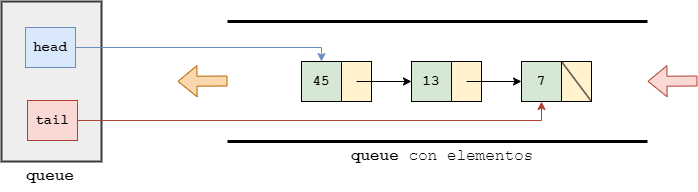 Fig. 121 Estado inicial de la cola.#
Si se desea poner un dato se invoca ka función…
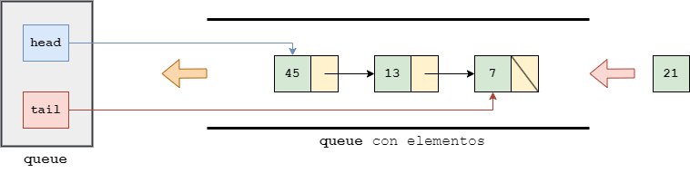 Fig. 122 Encolando un dato#
Estado de la cola despues de meter el dato:
…
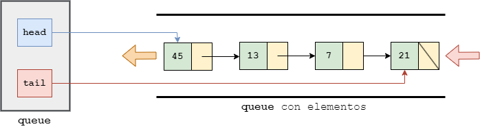 Fig. 123 Estado de la cola despues de que se mete el dato en el buffer.#
Queue_dequeue:int Queue_dequeue(queue *q, int *data) { if (q->head == NULL) { printf("ERROR: Empty Queue\n"); return -1; } else { node *current = q->head; q->head = current->next; *data = current->data; free(current); return 0; } }
Suponiendo que…
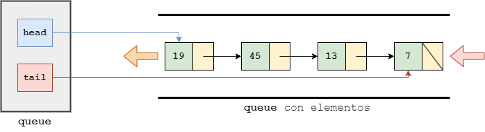 Fig. 124 Estado inicial de la cola.#
Si se desea poner un dato se invoca ka función…
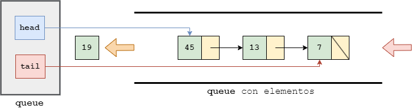 Fig. 125 Encolando un dato#
Estado de la cola despues de meter el dato:
…
Fig. 126 Estado de la cola despues de que se mete el dato en el buffer.#
Queue_print:void Queue_print(queue *q) { node *current = q->head; if (current == NULL) { printf("Empty queue.\n"); return; } else { printf("<-- "); while (current) { if(current) { printf("%4d ", current->data); } current = current->next; } printf("<-- \n"); } }
Vaciar la cola: To Do.node* List_search(list *L, int item) {
2.2.3. Ejemplos#
El siguiente código muestra el esqueleto de un programa en el cual se va a hacer uso de Listas enlazadas:
#include <stdio.h>
#include <stdlib.h>
#include <string.h>
#include <assert.h>
struct _node {
int data;
struct _node* next;
};
typedef struct _node node;
typedef struct _queue {
node *head;
node *tail;
} queue;
void Queue_init(queue *q);
int Queue_isEmpty(queue *q);
int Queue_size(queue *q);
void Queue_enqueue(queue *q, int data);
int Queue_dequeue(queue *q, int *data);
void Queue_print(queue *q);
int main(int argc, char *argv[]) {
queue* Q = (queue*)malloc(sizeof(queue));
assert(Q != NULL);
Queue_init(Q);
if(Queue_isEmpty(Q)) {
printf("La cola esta vacia\n");
}
else {
printf("La cola tiene elementos\n");
}
printf("Tamaño Q: %d\n",Queue_size(Q));
Queue_init(Q);
printf("Tamaño Q: %d\n",Queue_size(Q));
// Agregando elementos a la cola
Queue_enqueue(Q, 19);
Queue_enqueue(Q, 45);
Queue_enqueue(Q, 13);
Queue_enqueue(Q, 7);
printf("Tamaño Q: %d\n",Queue_size(Q));
Queue_print(Q);
int data;
Queue_dequeue(Q, &data);
printf("Dato sacado: %d\n",data);
Queue_print(Q);
Queue_dequeue(Q, &data);
printf("Dato sacado: %d\n",data);
Queue_print(Q);
Queue_dequeue(Q, &data);
printf("Dato sacado: %d\n",data);
Queue_print(Q);
Queue_dequeue(Q, &data);
printf("Dato sacado: %d\n",data);
Queue_print(Q);
Queue_dequeue(Q, &data);
printf("Dato sacado: %d\n",data);
Queue_print(Q);
/*
Queue_init(&Q);
Queue_print(&Q);
Queue_enqueue(&Q, 1);
Queue_enqueue(&Q, 2);
Queue_print(&Q);
*/
free(Q);
return 0;
}
void Queue_init(queue *q){
q->head = NULL;
q->tail = NULL;
}
int Queue_isEmpty(queue *q) {
if ((q->head == q->tail) & (q->head == NULL)) {
return 1;
}
else {
return 0;
}
}
int Queue_size(queue *q) {
int tam = 0;
if (q->head == NULL) {
return 0;
}
else {
node *current = q->head;
while (current) {
tam++;
current = current->next;
}
return tam;
}
}
void Queue_enqueue(queue *q, int data) {
node *new = malloc(sizeof(node));
assert(new != NULL);
new->data = data;
if (q->head != NULL) {
// El resto de los elementos
new->next = NULL;
q->tail->next = new;
q->tail = new;
}
else {
// Primer elemento
new->next = NULL;
q->head = q->tail = new;
}
}
int Queue_dequeue(queue *q, int *data) {
if (q->head == NULL) {
printf("ERROR: Empty Queue\n");
return -1;
}
else {
node *current = q->head;
q->head = current->next;
*data = current->data;
free(current);
return 0;
}
}
void Queue_print(queue *q) {
node *current = q->head;
if (current == NULL) {
printf("Empty queue.\n");
return;
}
else {
printf("<-- ");
while (current) {
if(current) {
printf("%4d ", current->data);
}
current = current->next;
}
printf("<-- \n");
}
}
3. Enlaces#
https://github.com/ErdemOzgen/Cpp-Learning-Archive/blob/master/README.md
https://ranger.uta.edu/~alex/courses/3318/
https://www.cs.usfca.edu/~galles/visualization/Algorithms.html
http://cslibrary.stanford.edu/
https://web.stanford.edu/dept/cs_edu/resources/textbook/
https://web.stanford.edu/class/cs106x/handouts.html
https://web.stanford.edu/class/cs107/
https://web.stanford.edu/class/archive/cs/cs107/cs107.1248/calendar
https://web.stanford.edu/class/cs106x/res/reader/CS106BX-Reader.pdf
http://cslibrary.stanford.edu/
https://www.cs.swarthmore.edu/~newhall/cs45/s14/#schedule
https://www.cs.swarthmore.edu/~newhall/unixlinks.html#lang
https://publications.gbdirect.co.uk/c_book/
https://www.cs.swarthmore.edu/~newhall/unixlinks.html#Clang
https://www.cs.swarthmore.edu/~newhall/unixhelp/os_stats.php
https://www.cs.swarthmore.edu/~newhall/cs35/
https://www.cs.swarthmore.edu/~newhall/unixhelp/C_linkedlists.pdf
https://www.cs.princeton.edu/courses/archive/spring20/cos217/
https://www.cs.princeton.edu/courses/archive/spring20/cos217/precepts/09voidptrs/symtablelist.pdf
https://www.cs.princeton.edu/courses/archive/spring20/cos217/lectures/01_Intro.pdf
https://august.princeton.edu/
https://www.cs.princeton.edu/courses/archive/fall07/cos217/lectures/
https://ocw.mit.edu/courses/6-s096-introduction-to-c-and-c-january-iap-2013/
https://ocw.mit.edu/courses/6-s096-introduction-to-c-and-c-january-iap-2013/pages/lectures-and-assignments/data-structures-debugging/
https://ocw.mit.edu/courses/6-s096-introduction-to-c-and-c-january-iap-2013/pages/lectures-and-assignments/data-structures-debugging/
https://ocw.mit.edu/courses/6-033-computer-system-engineering-spring-2018/
https://ocw.mit.edu/courses/6-828-operating-system-engineering-fall-2012/
https://ocw.mit.edu/courses/6-087-practical-programming-in-c-january-iap-2010/
https://ocw.mit.edu/courses/6-087-practical-programming-in-c-january-iap-2010/pages/lecture-notes/
https://ocw.mit.edu/courses/1-00-introduction-to-computers-and-engineering-problem-solving-spring-2012/
https://ocw.mit.edu/courses/6-0002-introduction-to-computational-thinking-and-data-science-fall-2016/
https://ocw.mit.edu/courses/6-100l-introduction-to-cs-and-programming-using-python-fall-2022/
https://ocw.mit.edu/collections/introductory-programming/
https://cs61c.org/su24/
https://www.cs.princeton.edu/courses/archive/spr24/cos126/schedule/
https://web2.qatar.cmu.edu/~mhhammou/15122-s23/
https://web2.qatar.cmu.edu/~mhhammou/15122-s23/schedule.html
https://bytesoftheday.wordpress.com/2014/07/04/q14/
https://www.cs.princeton.edu/courses/archive/spring20/cos217/
https://embeddedwala.com/Blogs/embedded-c/memory-layout-of-c-program
https://www.cs.mtsu.edu/~cs2170/C++labs/lab18/OSmemlayout.pdf
https://d1b10bmlvqabco.cloudfront.net/attach/j6fe5friemd22w/hzd1madqsie3ts/j7kw6i4tmqf8/61C_Note_1_Memory.pdf
https://ocw.mit.edu/courses/6-s096-introduction-to-c-and-c-january-iap-2013/bba9056d5290198d563edc47dfcff0e9_MIT6_S096_IAP13_lec3.pdf
https://cs61c.org/su24/
http://wla.berkeley.edu/~cs61c/fa17/
https://www.cs.princeton.edu/courses/archive/fall07/cos217/index.html
https://web2.qatar.cmu.edu/~mhhammou/15122-s23/lectures/21-cmem/writeup/pdf/main.pdf
https://cs.gmu.edu/~zduric/cs262/Slides/teoX.pdf
https://d1b10bmlvqabco.cloudfront.net/attach/j6fe5friemd22w/hzd1madqsie3ts/j7kw6i4tmqf8/61C_Note_1_Memory.pdf
https://www.cs.princeton.edu/courses/archive/fall07/cos217/
https://www.cs.mtsu.edu/~cs2170/C++labs/lab18/OSmemlayout.pdf
https://web2.qatar.cmu.edu/~mhhammou/15122-s23/lectures/21-cmem/writeup/pdf/main.pdf
https://www.cs.princeton.edu/courses/archive/spr24/cos126/schedule/
https://github.com/vishwa27yvs/Intro-to-Computer-Science-COS-126
https://www.berthon.eu/wiki/foss:wikishelf:linux:memory
http://resources.infosecinstitute.com/system-address-map-initialization-in-x86x64-architecture-part-1-pci-based-systems/#gref
https://fypandroid.wordpress.com/2011/01/17/anatomy-of-a-program-in-memory/
https://www.securitysift.com/windows-exploit-development-part-1-basics/
https://www.ibm.com/developerworks/library/j-nativememory-linux/
https://gabrieletolomei.wordpress.com/miscellanea/operating-systems/in-memory-layout/
http://www.cs.utexas.edu/users/fussell/cs310h/lectures/Lecture_17-310h.pdf
https://ocw.mit.edu/courses/electrical-engineering-and-computer-science/6-087-practical-programming-in-c-january-iap-2010/lecture-notes/
https://stackoverflow.com/questions/2128728/allocate-matrix-in-c
https://www.geeksforgeeks.org/dynamically-allocate-2d-array-c/
https://www.programiz.com/c-programming/c-dynamic-memory-allocation
https://www.cs.swarthmore.edu/~newhall/unixhelp/C_arrays.html
https://engineering.purdue.edu/ece264/